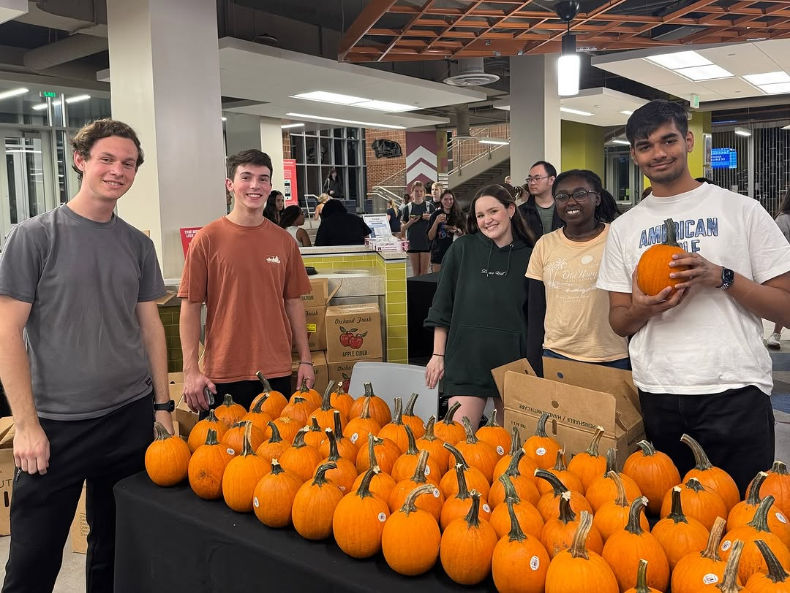

Introduction
Hi, I’m Fazlemalak Chimthanawala, a passionate gamer, reader, and aspiring sarcasm master. Coming from India, I aim to experience and participate in every single activity here in America. I love eating desserts and watching sci fi tv and sitcoms. My favorite tv show is Friends.
What is an RA?
An RA is more than a resource for residents; they are mentors, community builders, and advocates for personal growth. As an RA, I aim to be a supportive presence, ensuring residents feel valued and connected.
Strengths
My top 5 Clifton Strengths are Command, Competition, Input, Significance and Ideation. I love being in charge, learning more about new things and I want to work on stuff that makes a difference. My personality type is ENTP and zodiac sign is Leo. My ENTP personality type is Debater and I love playing Devil's Advocate whenever possible. My greatest strengths are leading others, learning and want to work on important stuff.
Transferable Skills
- Leadership and teamwork
- Effective communication and active listening
- Conflict resolution and mediation
- Event planning and organizational skills
- Time management and prioritization
I have written more about my transferable skills in this paper
Community Builder (CB) Statement
Community Builders are essential for fostering trust and camaraderie. During an Oktoberfest event that I was a part of organizing, I saw a lot of people come together, enjoy some good food, drink apple cider and paint a pumpkin.
Student Development Theory
I believe that student development thrives in environments of constructive pressure and competition. After all, pressure forms diamonds. But fun is also equally important to enjoy life. For more insights, check out my paper on the Student Development Theroies I learnt.
Campus Resources
For more information, check out my blog on the Campus Resources that I wrote about in my blog.